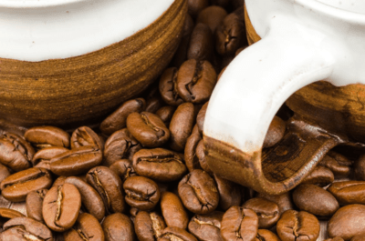
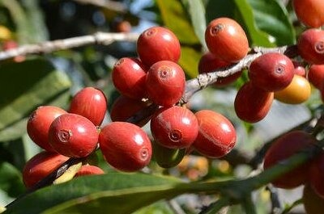
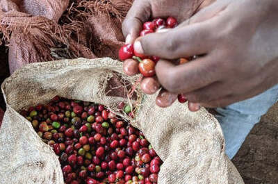
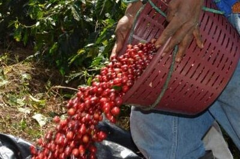

Szemes kávék
- 
Az etiópiai Sidamo a világ egyik legrégibb kávéültetvényeiből származik. Délnyugat-Etiópia hegyvidéki erdei közt rejtőznek az arabkávé kultúrájára összpontosító kis hagyományos gazdaságok. A Forest Coffee egyike a 80 arabica kávé fajtáiból. E változatos klímájú vidék, mely buja zöld növényzettel borított, komplex ízek egész skáláját felvonultató kávékat terem.
- 
Etiópia a világ 5. legnagyobb kávétermelője és egyben a kávé őshazája. Az Etióp Yirgacheffe az ország déli területén található Yirgacheffe tartományból származik. Az itt 1700-2000 méter tengerszint feletti magasságban termő arabica kávék az ország legjobbjai. A Yirgacheffet könnyed textúra és jól kiérezhető gyümölcsös édes ízvilág jellemzi. Évek óta a speciality kávék számos listáján a világ 10 legjobb kávéja között tartják számon.
- 
Don Francisco és Blanca Nieve nagyon magasan élnek a nicaraguai Jinotega hegyei között. Kivételes minőségű kávét készítenek, és farmjaik egy részét természetes, erdei állapotukban hagyják, hogy megvédjék a felszínre bugyborékoló forrásvizet. Olyan magasan vannak, hogy a kávéjukat az ország többi kávéja után teljes két hónappal takarítják be a hidegebb éghajlat és a gazdaságuk mikroklímájának megnövekedett felhőtakarója miatt.
- 
Guatemalában sokféle helyi mikroklíma található. Az El Injerto farmról érkező kávénk Huehuetenengo vidékről, Guetamala legmagasabb vidékéről származik. Természetes ősi esőerdő veszi körül az ültetvényt, amely ideális mikroklímát kínál az ott termő kiváló arabica kávénak. A farmot az Aguirre család 4. generációja vezeti oly nagy sikerrel, hogy 10 éve minden évben elnyerik a rangos nemzetközi COE, azaz " Cup of Excellence " minősítést.